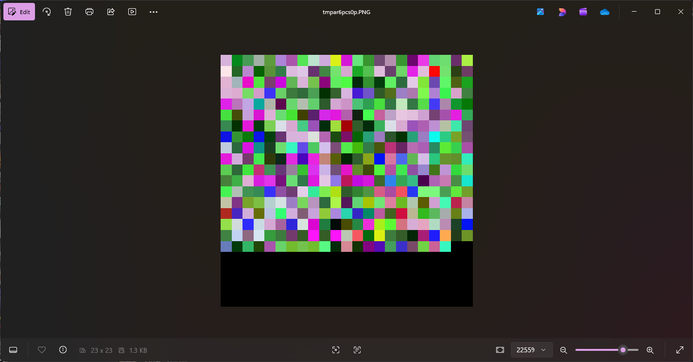

N.A.N.A.K.I
Numeric Array Navigation As Kolor Image nanaki
This is a continuation of my byte to sound project. I felt like it was a good idea, i didn't want to end it there. I felt like more could be done with that idea., You can check out the full repository here: Byte To Image on Github.
How I Came Up With This Algorithm
In the blog of the byte to sound project. I mentioned that hashing. That made me wonder if there was anyway I could use bytes to hash a file in a unique way. This maybe confusing because things seem out of order but this is how I came up with it. I first started with me looking at the byte values of words, I was trying to figure out if there is anything that I could do them. For some reason I had an idea when I saw the word four in bit notation. Four in bit notation looks like, 01100110011011110111010101110010. I thought to myself, what part of that is the letter "f" and "o"? so I split the the entire bit string in half. Its important to know that 8 bits will make up one byte and since there are four letters in "four" the first 16 bits is "fo". Now that I had "fo" I didn't know what to do with them so I decided to just enter those 16 bits into google and see what happens. Google ai told me that this is the binary number for "fo" and that it's decimal value is 26,233. That piqued my interest so I went back to my notes to get the bit string for "ur" and I stopped and looked at what I had.
<
"four" as a full bit string -> 01100110011011110111010101110010
fo -> 0110011001101111
ur -> 0111010101110010
It looked like i had possible coordinates. I can't explain why I saw that but I did. So I thought about how I could possibly graph this, then I thought of my old byte to sound project, why not byte to image. I had to figure out a way of getting these bytes to into rgb numbers. But how would map a word like "four" to an rgb value.
The Algorithm
This version of the program only counts every word once. So It wont take into account duplicate words. It also ignores comments so it only focuses on the actual code. What I did was take a word. In this case lets use the word "the". I'd take "the" and get the byte value for each letter. "the" → [116, 104, 101], from there I added them together to get the total byte value for the word "the", which is 321. But that's too big for and rbg value, so I had to use modular division and divide 321 by 256 so I can get a value that fits in the rgb range, 321 % 256 = 65. So now the original byte value of "the" is 65. But what about the other two values? For a word that has an even length words its easy. Take the word "test" for example. "test" → [116, 101, 115, 116] I just split it in half and combine the two numbers. So half_A = (116 + 101 = 217) and half_B = (115 + 116 = 231) in the code both values are wrapped just incase they happen to be over 256. Now that we have our to half's I combine all the values to get an rgb value. It looks something like this (half_A, original_byte, half_b). But what if the length of the word is odd? Lets use the word "the" again. We know that "the" → [116, 104, 101], so we already have our two half's, 116 is half_A and 104 is half_B. But what about 101? This is where I "nibble" it. I turn 101 into its binary value, 01100101, and divide it in two, 0110 which is 6 and 0101 which is 5 in decimal form. I then add them to their respective side, so 6 gets add to 116 and 104 gets 5. So now I have the rgb value of (122, 65, 109).
After Thoughts
I'm sure some might wonder why I ordered the values they way I did, and my answer to that is that I have no answer. I just did it cause at the time its what felt right. Also adding the decimal value to the binary values may raise some eyebrows but again, I just did because It felt right to me when I came up with this. I've attached the image my program generated. I had to zoom in a lot because it was really small.
